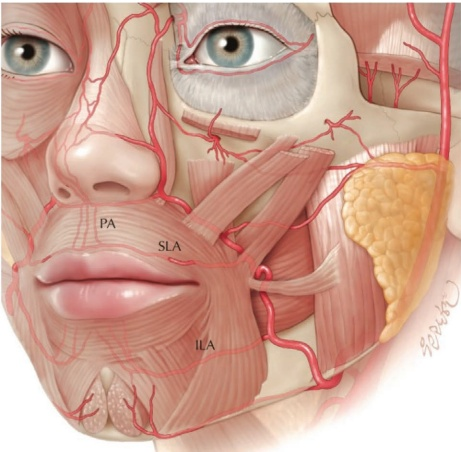
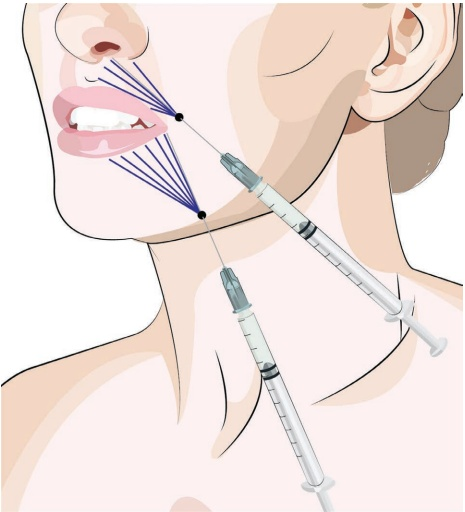
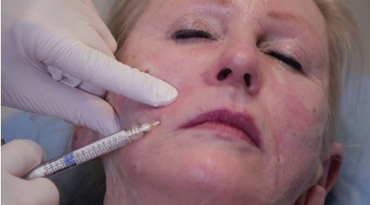
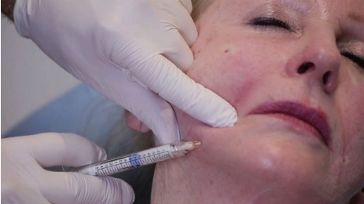
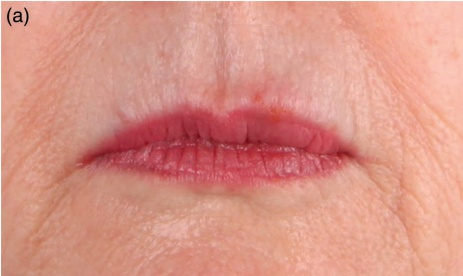
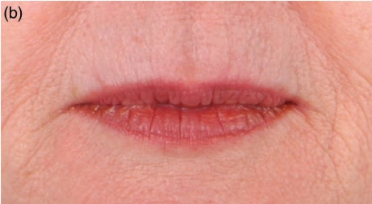

22 面部下三分之一：放射状唇纹
面部下三分之一的放射性唇纹
JANI VAN LOGHEM
22.1 引言
放射性唇纹具有肌肉（动态）和皮肤（非动态）两个组成部分。由于口周骨骼平台和唇部深层脂肪的减少，口轮匝肌可能变得松弛并因此过度活跃，从而导致放射性唇纹的动态成分。正如其他章节所述（鼻唇沟、前颏沟和垂下嘴角纹），上颌和下颌骨吸收可以通过在骨膜上置入未稀释的羟基磷灰石钙（CaHA）或其他填充剂来纠正。通常不推荐使用 CaHA 来纠正唇部的深层脂肪吸收；因为 CaHA 产品是白色的，而深层脂肪本质上是唇的黏膜下组织，因此该产品在该深度注射时可能会可见。然而，真皮成分主要是胶原蛋白的减少，这为（高倍）稀释的 CaHA 提供了一个良好的适应症。
22.2 安全注意事项
在注射放射性唇纹时，应注意不要注射过深，因为上唇动脉和下唇动脉通常走行于口轮匝肌下方（图 22.1）。
22.3 放射性唇纹钝性套管针技术 对于注射定位，参见图 22.2。
22.3.1 分步技术
-
利用已有的预设孔（鼻唇沟和前颏沟），或确定可到达上、下皮肤唇的入口点。
-
使用稀释的 CaHA（每 1.5 mL CaHA 产品稀释 0.5–1.5 mL 利多卡因）和 25G、38 mm 或 50 mm 的钝性套管针。






-
在局部麻醉后，考虑进行神经阻滞麻醉并用 23G 锐针预刺孔。
-
沿套管针的方向拉伸皮肤。
-
将套管针从外侧向口角推进至唇嵴。
-
以扇形技术放置多个反行线性丝线（图 22.3）。
-
将套管针从法令纹入口点推进至口角。
-
以扇形技术将多个反行线性丝线置于中线方向（图 22.4）。
-
根据需要用手动按摩均匀。
有关术前和术后结果以及操作技术，请参阅图 22.5。
22.4 术后护理
如有必要，可使用一根手指在口内和一根手指在口外进行手动按摩，以使产品均匀分布。可能会出现不均匀的肿胀，应在一两天内消退，并可能观察到瘀伤。
22.5 实现最佳效果的附加治疗
除了直接用（高倍）稀释的 CaHA 治疗放射状唇纹外，还可以考虑在骨膜水平治疗鼻olabial褶、前法令沟和提眼纹（参见第 15 章和第 20 章）。其他附加治疗可包括肉毒毒素治疗以放松口轮匝肌以及真皮浅层注射软 HA。为改善真皮强度和减少放射状唇纹，还可采用磨削性激光，如分级 CO₂ 和中等到深度的化学剥脱。